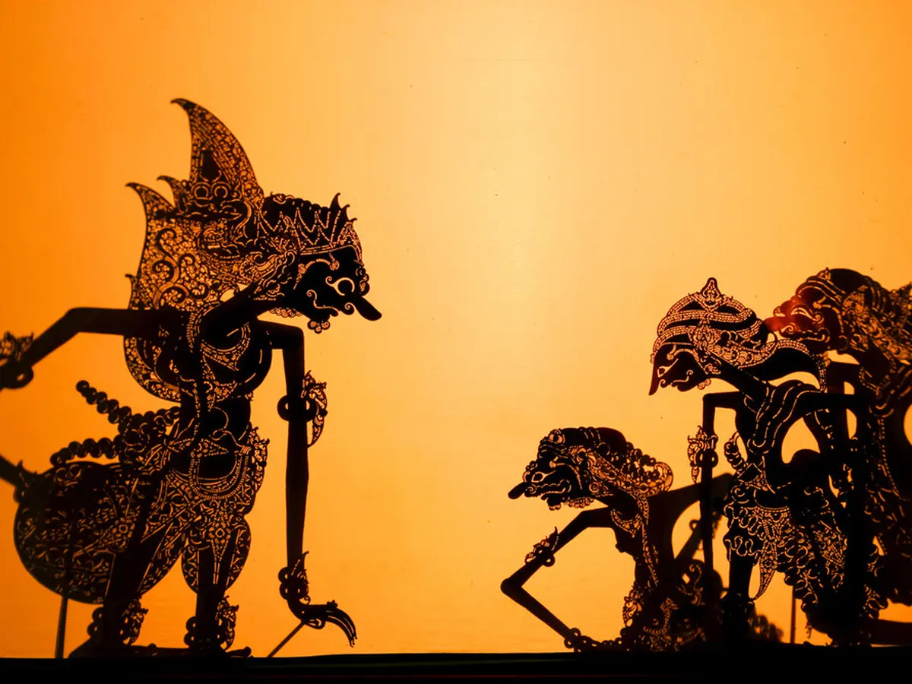
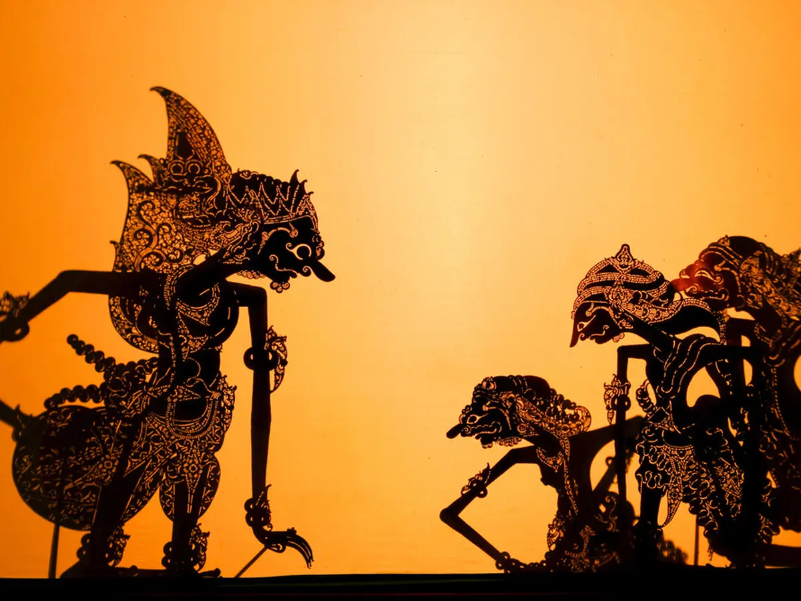

Sebuah Project Website Dari anak SMA Budi luhur Tangerang!
Kelompok 5
Selamat datang di Wayang Kulit Website, tempat di mana kita menjelajahi keajaiban seni wayang, sebuah warisan budaya yang tak ternilai.
Sebuah Project Website Dari anak SMA Budi luhur Tangerang!
Kelompok 5
Selamat datang di Wayang Kulit Website, tempat di mana kita menjelajahi keajaiban seni wayang, sebuah warisan budaya yang tak ternilai.
Vito, Gladys, Limbong, Cahaya.